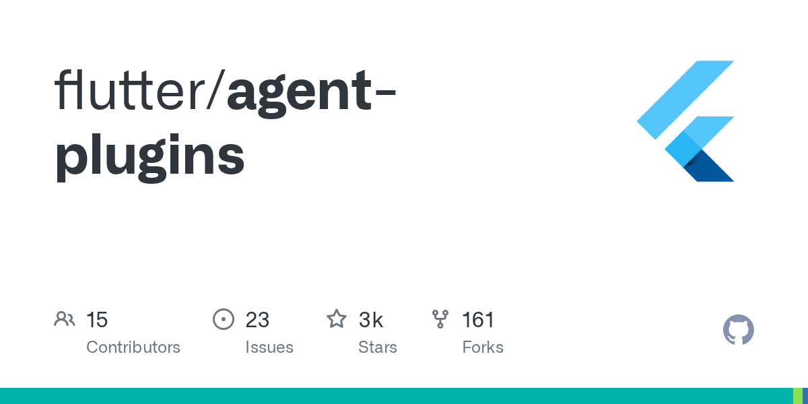
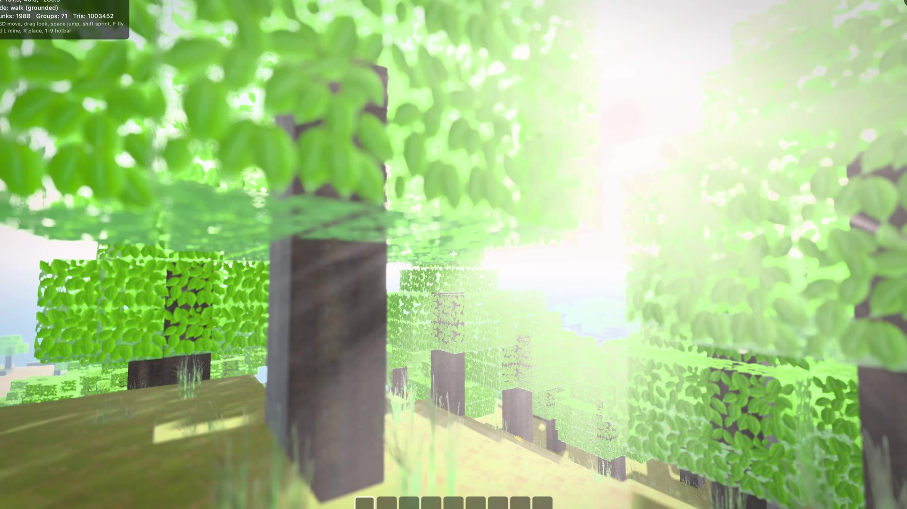
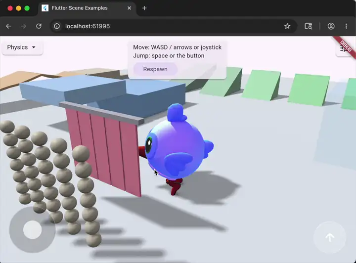
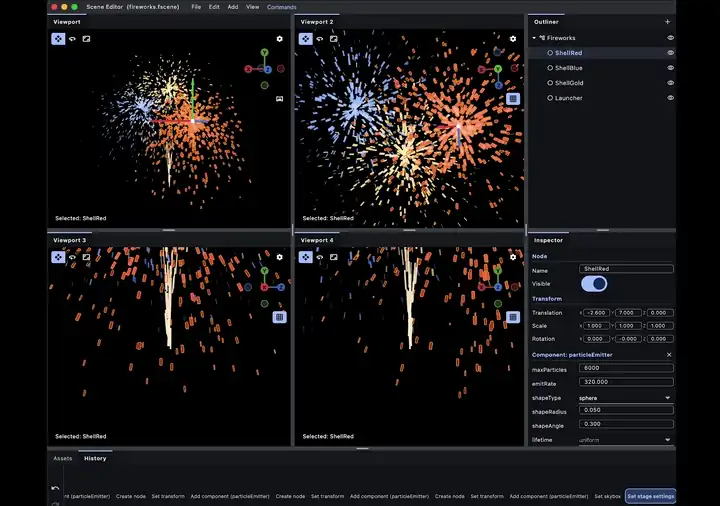
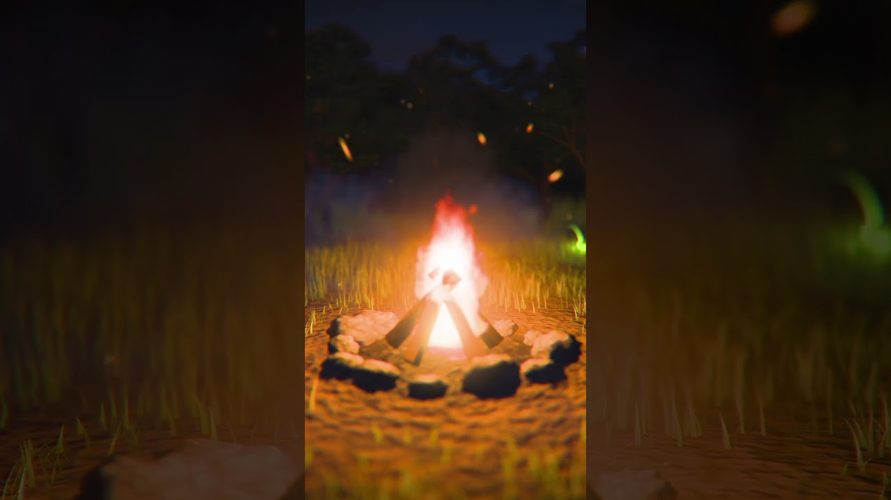
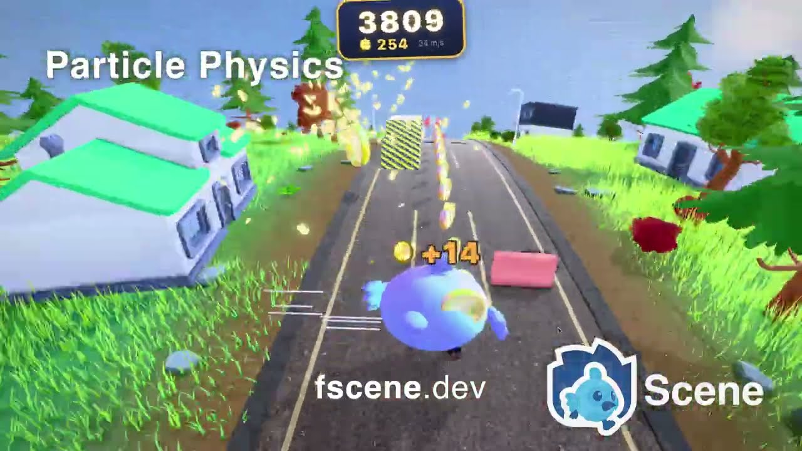
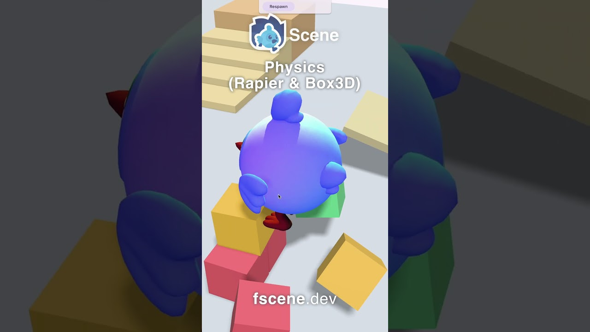
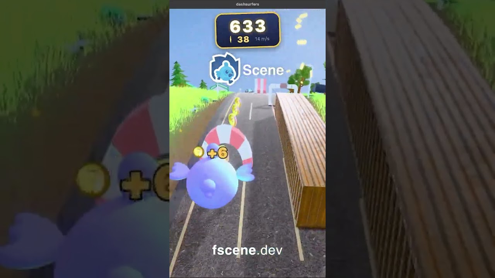

30 秒版本
七月的三條主線

01
官方 agent skills 擴到三家 IDE
flutter/agent-plugins 一個月 21 次 commit：7/14 Claude Code、7/17 Codex、7/21 Cursor，7/23 起加上 evals 評分機制。
02
零 feature release，FlutterCon USA 登場
stable 只出 3.44.5 到 3.44.8 四個 patch，3.47 於 7/13 切出 beta 分支。7/16–17 Orlando，70 位講者、65 場議程。

03
平台往電視、桌面、3D 擴張
LG 開源 webOS embedder；FlutterCon 排了桌面多視窗 API 與 Raspberry Pi 議程；Flutter Scene 3D 引擎連發三個版本。

社群專案 · 作者 bdero
Flutter Scene — Flutter 的即時 3D 引擎
不是包一層 renderer，是完整的 3D 引擎：渲染、物理、音訊、工具鏈、資產管線，全部是 Dart package，跑在 Flutter 支援的每個平台上。作者就是當初做出 Flutter GPU 的工程師。

PBR ＋ 後製
Bloom、景深、god rays、SSR、眼睛自動曝光

物理
一個 component 就接上剛體物理與角色控制器
Gaussian Splat
.ply / .splat 實拍捕捉當成一般節點載入

編輯器 ＋ MCP
桌面編輯器內建 MCP server，AI agent 能直接改場景
fscene.dev · github.com/bdero/flutter_scene · pub.dev/packages/flutter_scene · ⭐ 537
Flutter Scene · 七月他發了 5 支影片
這些全部都是 Flutter appDashsurfers 跑在 120 fps
Dashsurfers：完全用 Flutter 做的 3D 無盡跑酷
07-23 · 實機 120 fps

這團營火 100% 程序生成，零素材
07-26

Flutter Scene in 90 Seconds
07-21

All of this is real-time 3D running in Flutter
07-21

This endless runner is a Flutter app
07-23

Dashsurfers
07-02
flutter_scene_box3d 0.1.0
07-17
flutter_scene 0.19.0
07-27
flutter_scene 0.20.0 ＋ scene 0.1.0 ＋ rapier 0.3.0
同一天三包齊發：核心 scene document 抽成獨立 package、物理解耦成可插拔後端、粒子系統轉公開 API。

收尾 · 用數字回顧七月
2026 年 7 月的 Flutter，換成數字長這樣
0
feature release
4
stable patch（3.44.5→.8）
21
agent-plugins commits
70/65
FlutterCon 講者 / 議程
201
lg-flutter-webos stars
3
Flutter Scene 同日發布套件
120fps
Dashsurfers 實機
10M
Knowunity MAU
100萬行
SoFi 遷移後刪掉的程式碼
1
官方 blog 發文數
blog.flutter.devflutter/agent-plugins
lg-flutter-webosflutterconusa.dev
fscene.devyoutube.com/@bdero
serverpod.devr/FlutterDev
八月見 👋
3.47 stable 應該就在那時候
3.47 stable 應該就在那時候